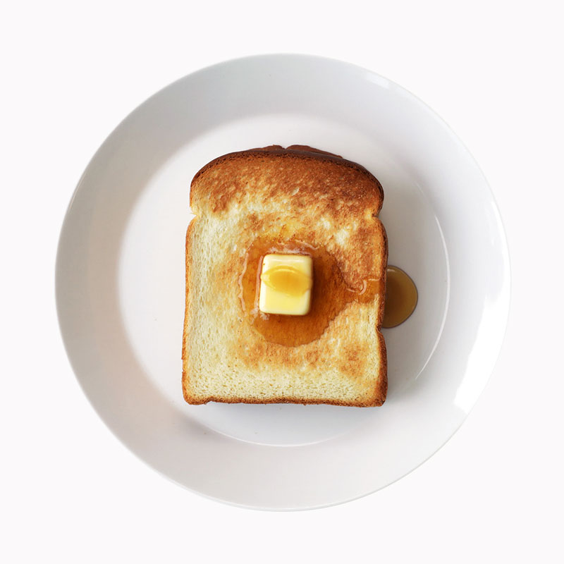
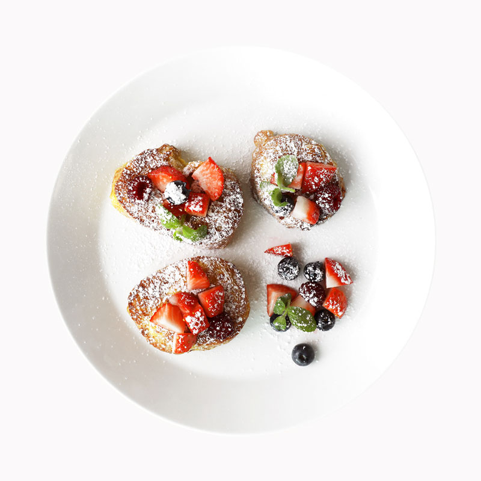
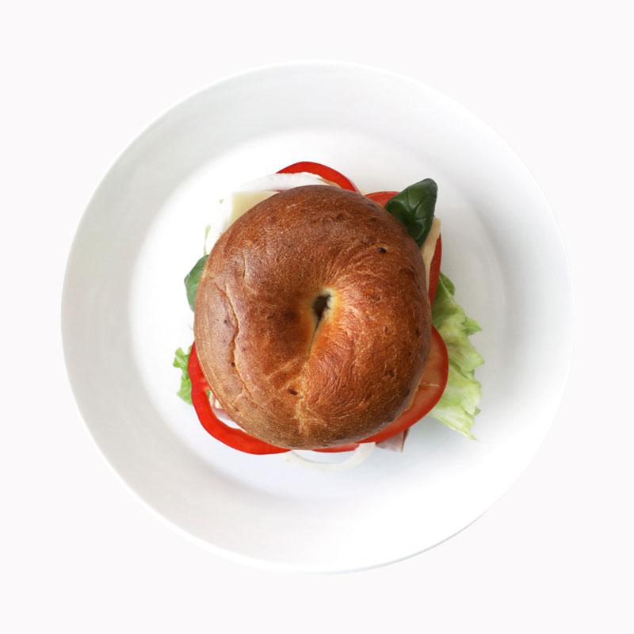
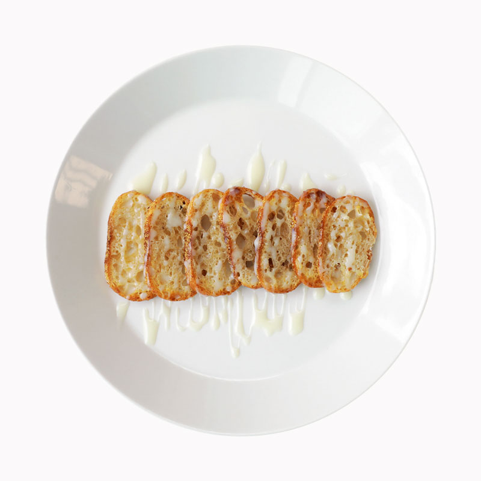
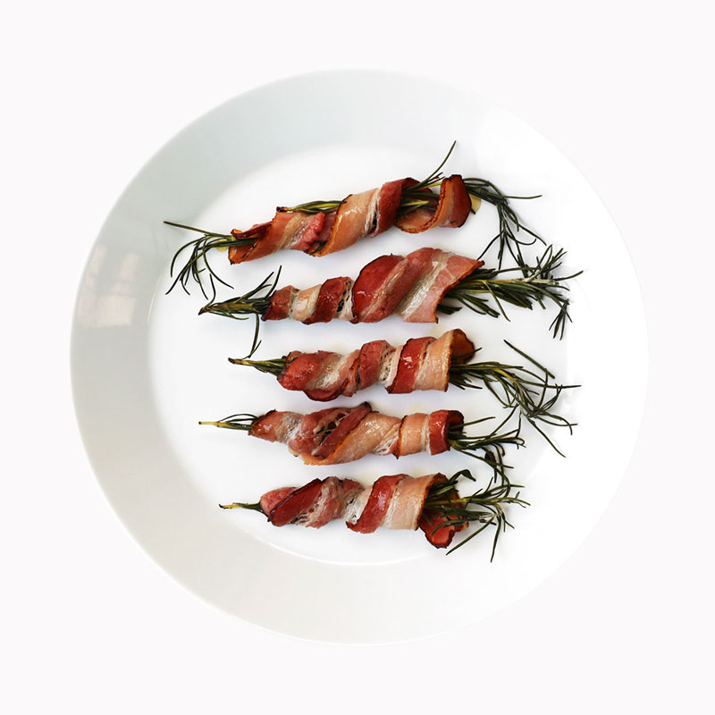
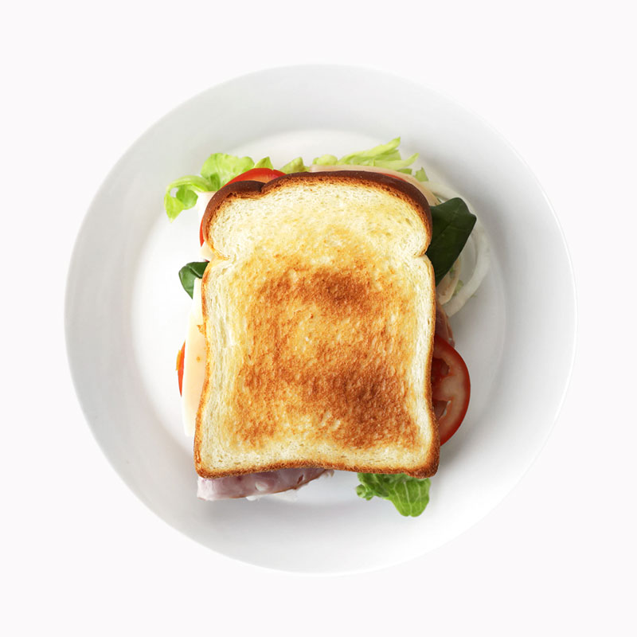
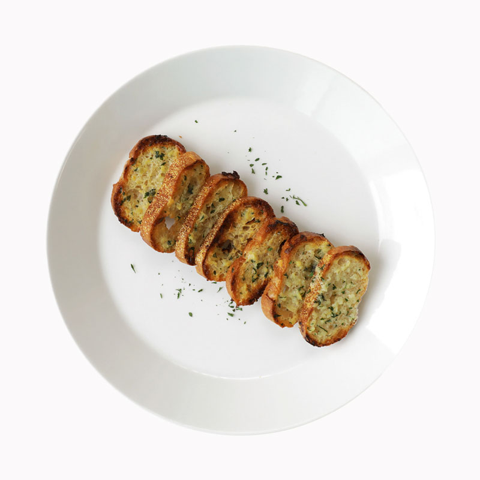
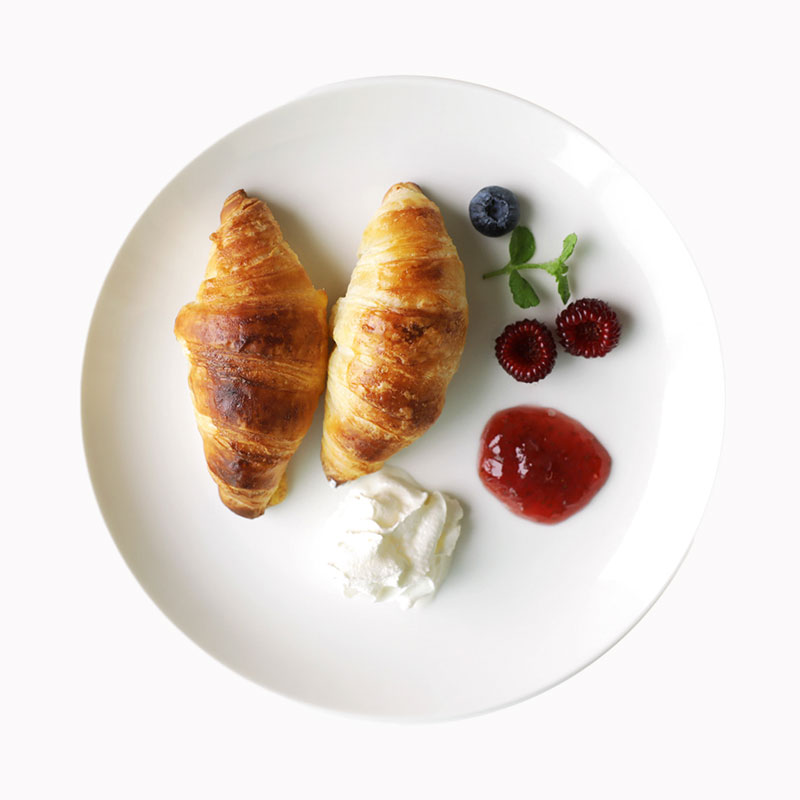
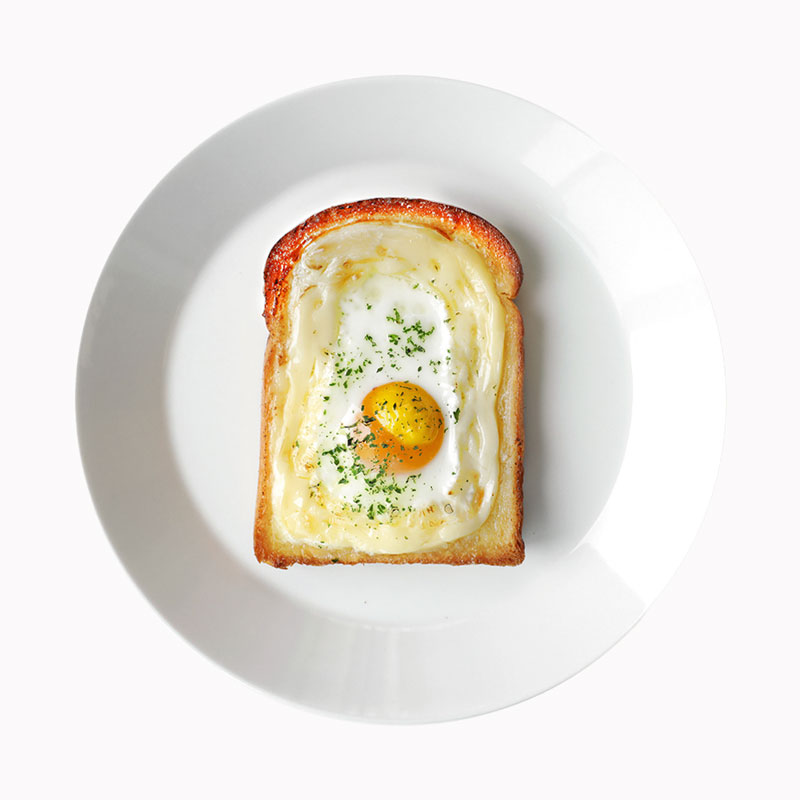

Recipe
-
- 메이플 시럽 버터 토스트
재료 | 식빵 1장, 메이플 시럽, 버터
소요시간
2.5분~3분- 
-
- 바게트 프렌치 토스트
재료 | 바게트, 계란 2개, 우유, 시나몬 파우더, 딸기,
블루베리, 애플민트, 슈가 파우더소요시간
13~15분- 
-
- 베이글 샌드위치
재료 | 베이글, 양상추, 햄, 치즈, 파프리카, 양파,
홀그레인 머스타드 2T, 마요네즈 2T, 꿀 또는 올리고당 1T소요시간
2.5~5분- 
-
- 연유 러스크
재료 | 바게트, 무염버터, 연유
소요시간
7분- 
-
- 메이플 시럽 베이컨 로즈말이
재료 | 로즈마리, 베이컨, 메이플 시럽
소요시간
10~15분- 
-
- 햄치즈 샌드위치
재료 | 식빵, 양상추, 햄, 치즈, 토마토, 양파,
홀그레인 머스타드 2T, 꿀 1T, 마요네즈 2T소요시간
2~5분- 
-
- 마늘 러스크
재료 | 바게트, 무염버터, 다진 마늘, 연유, 파슬리 파우더
소요시간
15분- 
-
- 크로아상
재료 | 크로아상 생지
소요시간
8~12분- 
-
- 계란마요 토스트
재료 | 식빵, 마요네즈, 계란, 파슬리 가루
소요시간
10~15분- 
js로 페이저 만들 예정